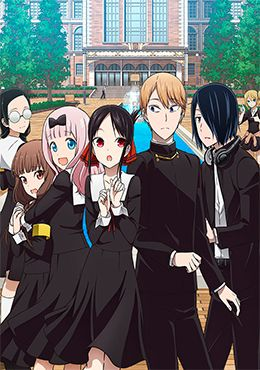

Boku dake ga Inai Machi
Boku dake ga Inai Machi
Bokutachi wa Benkyou ga Dekinai
Seishun Buta Yarou wa Yumemiru Shoujo no Yume wo Minai
 One Piece Film: Gold
One Piece Film: Gold
Kyoukai no Kanata Movie: I'll Be Here - Mirai-hen
Dungeon ni Deai wo Motomeru no wa Machigatteiru Darou ka
 Gotoubun no Hanayome
Gotoubun no Hanayome
Hataraku Saibou Black (TV)

Kaguya-sama wa Kokurasetai: Tensai-tachi no Renai Zunousen
Kimetsu no Yaiba Movie: Mugen Ressha-hen
Kono Subarashii Sekai ni Shukufuku wo!: Kurenai Densetsu
Arifureta Shokugyou de Sekai Saikyou Specials
ReZero kara Hajimeru Isekai Seikatsu - Hyouketsu no Kizuna
Yahari Ore no Seishun Love Comedy wa Machigatteiru. Zoku OVA
One Punch Man: Road to Hero
 Youjo Senki Movie
Youjo Senki Movie
Kyoukai no Kanata Movie: I'll Be Here - Kako-hen
Kobayashi-san Chi no Maid Dragon S Mini Dragon
 One Piece: Episode of Sorajima
One Piece: Episode of Sorajima
One Piece: Episodio del East Blue
Wotaku ni Koi wa Muzukashii
Youkoso Jitsuryoku Shijou Shugi no Kyoushitsu e (TV)
 One Piece
One Piece
 Kimetsu no Yaiba
Kimetsu no Yaiba
 Boku no Hero Academia
Boku no Hero Academia
Yahari Ore no Seishun Love Come wa Machigatteiru
Saenai Heroine no Sodatekata
 Sword Art Online: Alicization - War of Underworld
Sword Art Online: Alicization - War of Underworld
Koi to Yobu ni wa Kimochi Warui